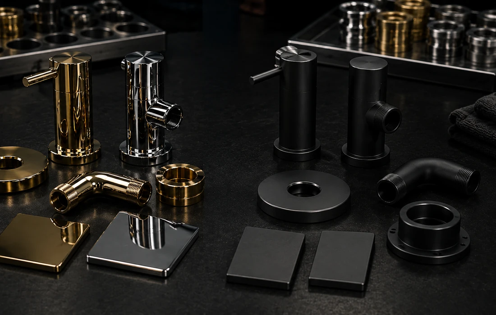

خدمات و فعالیتها
پوشش PVD، آبکاری نیکل کروم و پرداختکاری صنعتی با تمرکز بر دوام، ظاهر لوکس و کنترل کیفیت.

کدام مسیر به پروژه شما نزدیکتر است؟
بهجای انتخاب از روی نام فرآیند، از نیاز واقعی قطعه شروع کنید. جزئیات نهایی بعد از بررسی جنس، سطح و کاربرد تأیید میشود.
رنگ و فینیش دکوراتیو
برای یراق، اکسسوری و قطعات نمایان با تمرکز روی رنگ، براقیت و یکنواختی.
بررسی خدمترطوبت و تماسشیرآلات و یراق
برای قطعاتی که رزوه، آببندی، تماس دست و شرایط شستوشو در تصمیم مهماند.
بررسی خدمتکاربرد فنیPVD صنعتی
برای پروژههایی که علاوه بر ظاهر، شرایط تماس، سایش یا معیار عملکرد مطرح است.
بررسی خدمتآبکاری کلاسیکنیکلکروم
برای ظاهر براق و مسیرهای آبکاری که جنس پایه و وضعیت خوردگی باید ابتدا بررسی شود.
بررسی خدمتکیفیت سطحپولیش و آمادهسازی
برای اصلاح خطوخش، کنترل بافت و آمادهکردن سطح قبل از پوشش یا تحویل نهایی.
بررسی خدمتهنوز مطمئن نیستید؟ جنس، عکس و کاربرد قطعه را بفرستید تا مسیر مناسب بررسی شود.
راهنمایی برای انتخابچرا کاویکو؟
کیفیت قابل تکرار، کنترل فرایند، و خروجی لوکس برای پروژههای حساس.
کنترل کیفیت
کنترل سطح و فینیش بر اساس معیارهای همان پروژه.
تجهیزات PVD
پارامترهای فرآیند با توجه به قطعه و فینیش هدف تنظیم و پایش میشوند.
مشاوره پیش از اجرا
انتخاب فینیش و آمادهسازی سطح متناسب با قطعه.
تحویل مطمئن
زمانبندی شفاف و چیدمان بهینه برای بهرهوری بهتر.
انتخاب سریع خدمات
سه قدم کوتاه تا مسیر درست (بدون پیچیدگی).